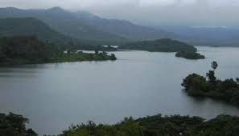
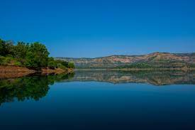
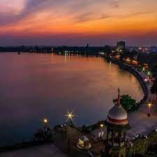
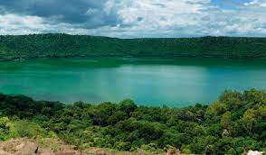
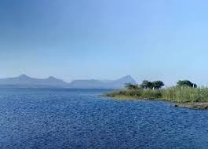

Upvan Lake is a picturesque freshwater lake located in the city of Thane, Maharashtra, India. Nestled amidst lush greenery and scenic surroundings, this serene lake is a popular destination for locals and tourists alike. The name "Upvan" translates to "upper forest," which aptly describes the natural beauty that surrounds the lake.
Read More

Vihar Lake
Vihar Lake was built in the 1860s in mumbai city during British colonial rule to provide a much-needed water supply to the growing city. The lake is nestled amidst the lush greenery of the Sanjay Gandhi National Park, adding to its scenic beauty and attracting tourists and nature enthusiasts alike.
Read More

Panshet Lake
Panshet Lake, located in Maharashtra, India, is a picturesque reservoir nestled amidst the Sahyadri mountain range. This man-made lake was created by damming the Ambi River, and it serves as a vital source of water supply and irrigation for the surrounding region. Read More

Rankala Lake
Rankala Lake is a picturesque and prominent freshwater lake located in Kolhapur, Maharashtra, India. Spread over an area of approximately 52 acres, the lake serves as a popular recreational spot and a significant landmark for both locals and tourists alike.
Read More

Lonar Lake
Lonar Lake is a fascinating and unique geographical wonder located in the Buldhana district of Maharashtra, India. What makes this lake truly remarkable is its origin, as it is a result of a meteorite impact crater that was formed around 52,000 ± 6,000 years ago. Read More

Vaitarna Lake
Vaitarna Lake is a picturesque reservoir situated in the state of Maharashtra, India. Nestled amidst the verdant Western Ghats, this man-made lake is a popular tourist destination and a vital source of water supply for the surrounding regions.
Read More